Six frames, three surfaces, phone and desktop. Captures of the engine, not
drawings: Current is forage@8bc6cbd (main), Proposed is
forage@c5281f8 (claude/ring-scope), both taken by
scripts/mock-snaps.mjs at 390×844 and 1280×900 against the same signed-in
population. What this mock is for: the ring stops being five places you go and becomes one
control over what every surface shows you. Everything below is the visible half of that.
Read the pill as a scope, not a destination. On main, "Your ring" is five rows in the left nav and pressing one takes you to a board of those people. On the branch there are no rows: there is a pill, it takes you nowhere, and it decides who is in everything you are already looking at. World is the default, so a reader who never touches it sees exactly what they see today.
Current: the left nav opens with Your ring — Just me, My mutuals, My follows, My follows one hop out, World — above Feeds. Each is an address. Proposed: that section is gone and a segmented pill sits in its own bar under the masthead: Mutuals · Follows · World, World selected. The pill is a sibling of the masthead rather than inside it, and that is a measurement rather than a preference — see Decision 3 below.
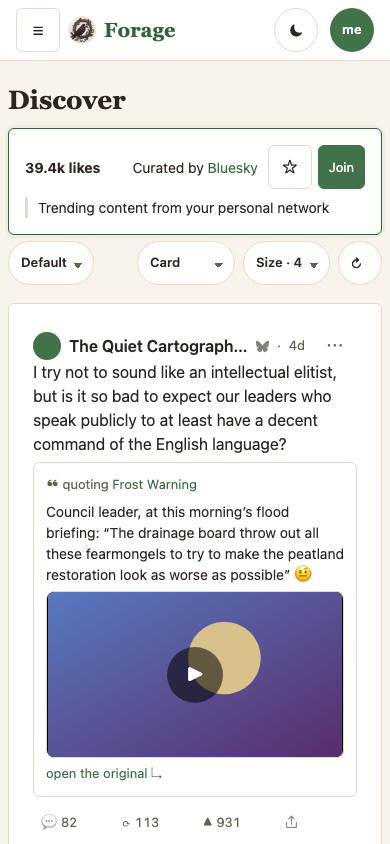
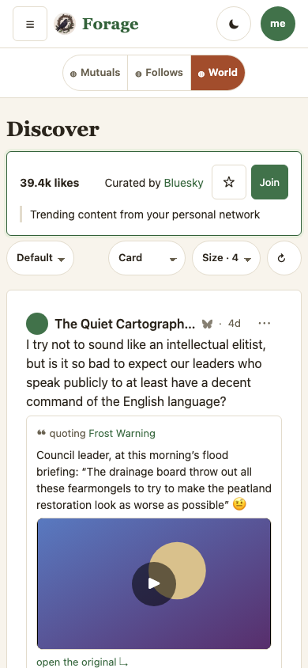
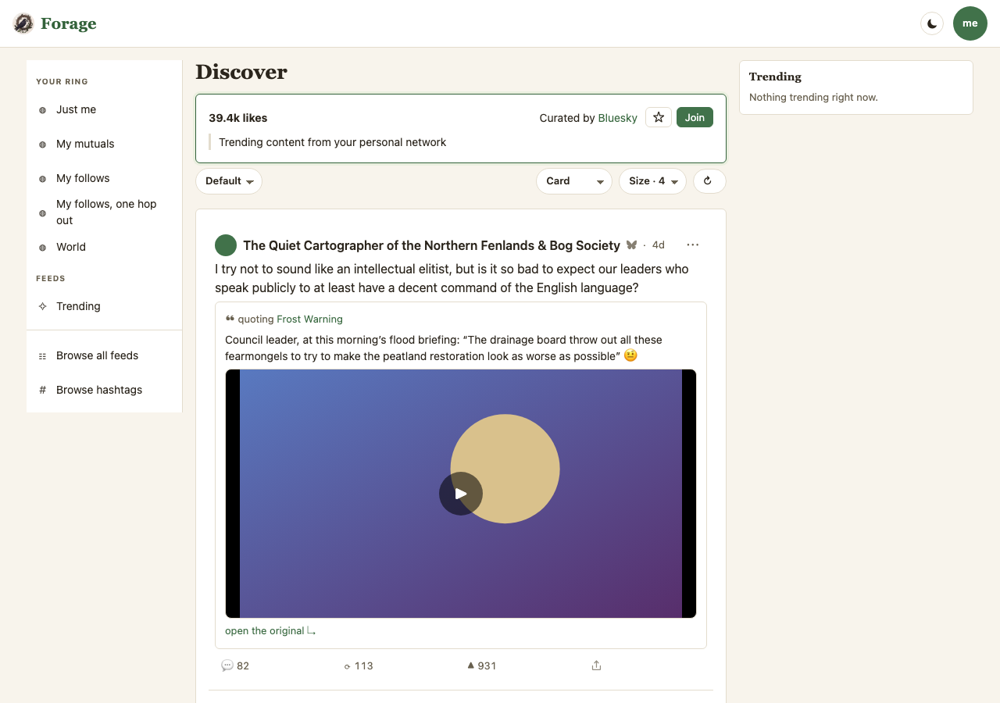
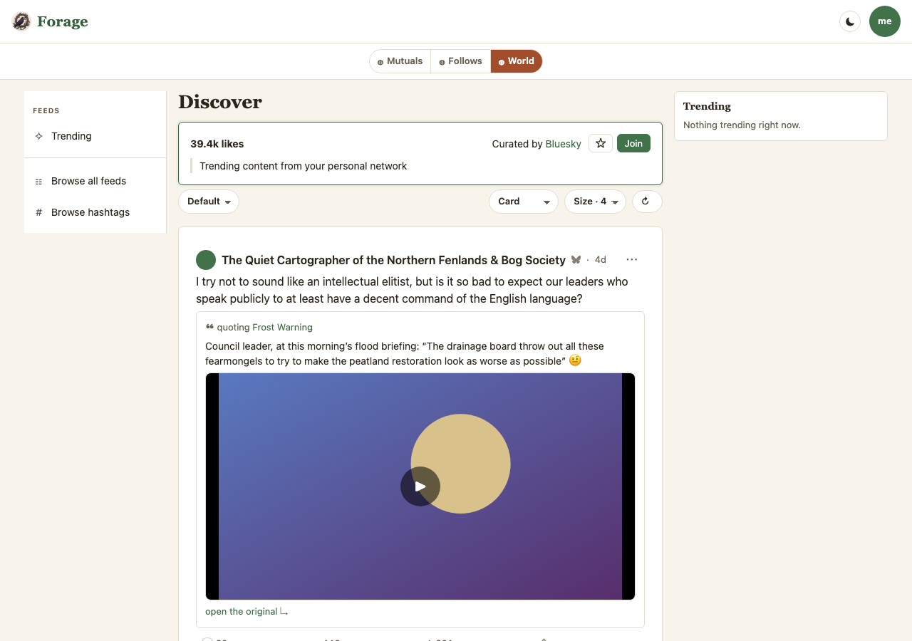
The ring applies site-wide, threads included — the owner's call, against this plan's own recommendation. That leaves one real hazard: a reply your ring hid is a reply whose answer you cannot see. So the thread grew a widening control instead of an exemption. Moving it changes this thread; the pill in the masthead stays exactly where you left it, and navigating away drops the override. Current: no control. Proposed: the pill sits above the head card, because it scopes the whole thread rather than the head post.
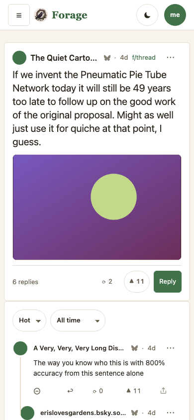
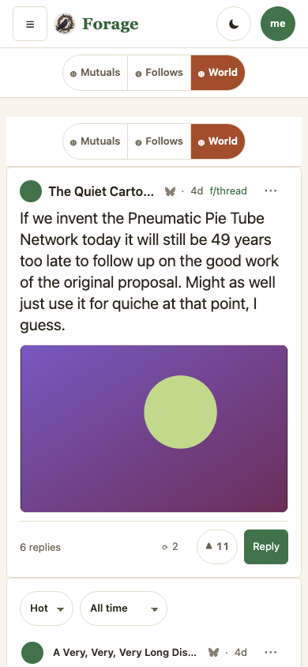
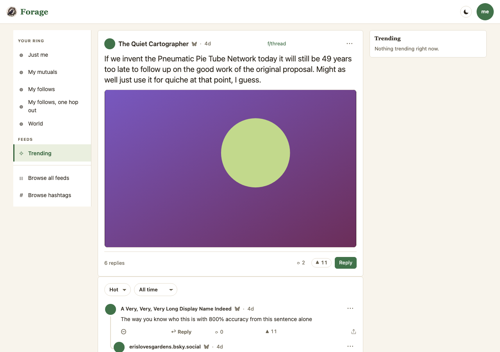
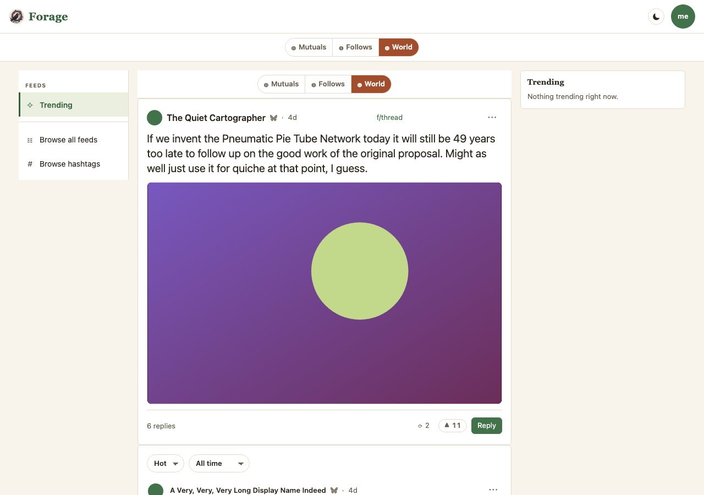
Composability is the owner's ask — "users can remove or add entries on the slider" — and this is where it is spent. One checkbox per scope, World checked and disabled because it is the way back. Below it, the exemption: Exclude feeds and hashtags from your ring, checked by default, on the grounds that a feed is something you went and asked for by name. Uncheck it and a quiet feed can render empty, which is the setting working.
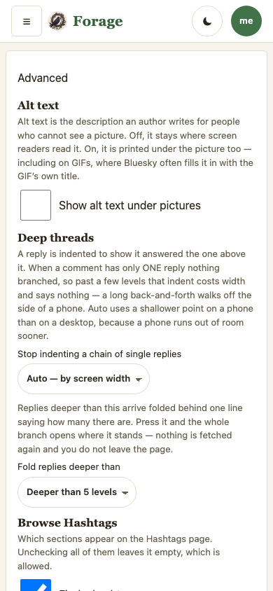
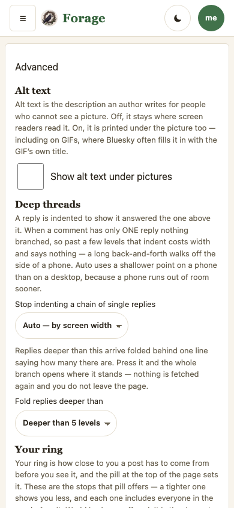
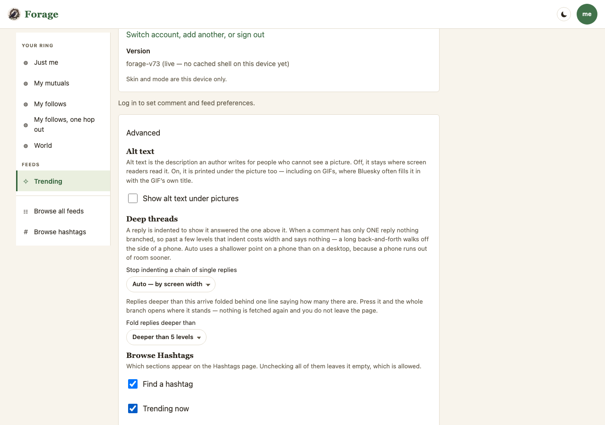
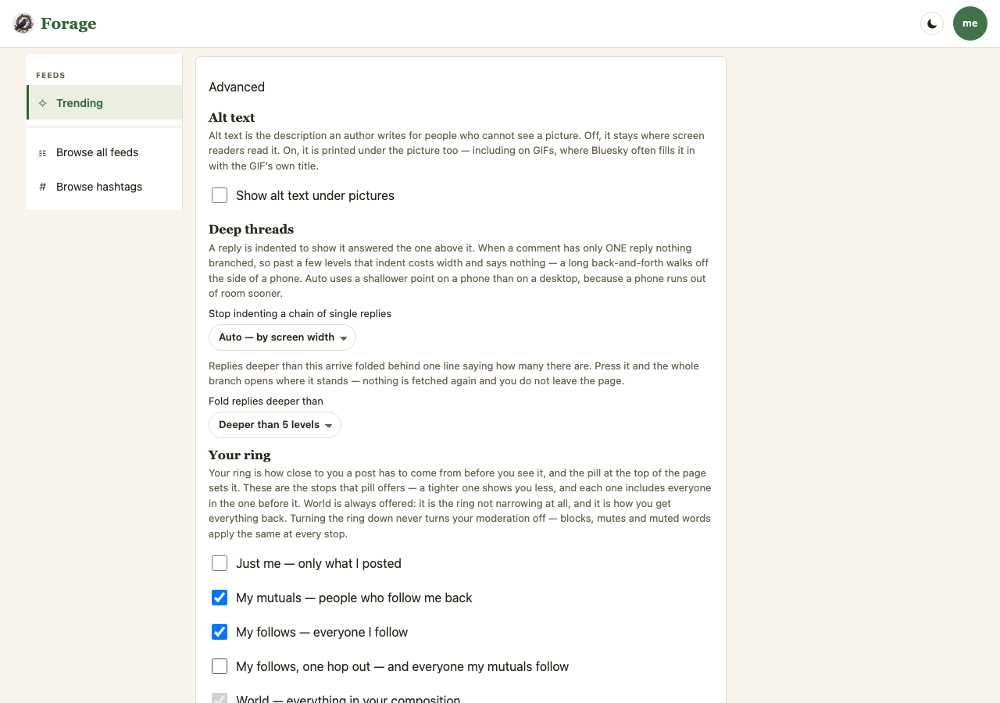
| # | Question | Answer |
|---|---|---|
| 1 | What is the middle stop? "Mutuals + follows" computes to the follows rung, so two stops would have shown identical content. | Closed — 1a. Mutuals · Follows · World, tightest first. hop stays in the registry for anyone who adds it. |
| 2 | Does the ring reach inside a thread? | Closed — yes, against this plan's recommendation. Decision 4 is what makes that safe. |
| 3 | Where does the pill live, and what do the labels say on a phone? | Answered by the gate. Not the masthead: e2e/avatar-nav pins it at one row at 320px and three segments at the 44px touch floor took it to 167px. Own bar, not sticky, short labels. |
| 4 | The thread pill — global or local? | Closed — a transient override. An argument, never a write, so leaving the thread drops it by construction. |
| open | Do the /r/<rung> routes retire? |
They still resolve. Retiring them orphans the merged ring board — roughly 400 lines and fifteen tests — and that deletion is its own decision. |
| open | Should the pill be sticky? | It is not. Sticking it under a sticky masthead means two elements agreeing about a number that a skin changing the band's padding would break. |
me, so no setting can narrow you out of your own conversation.